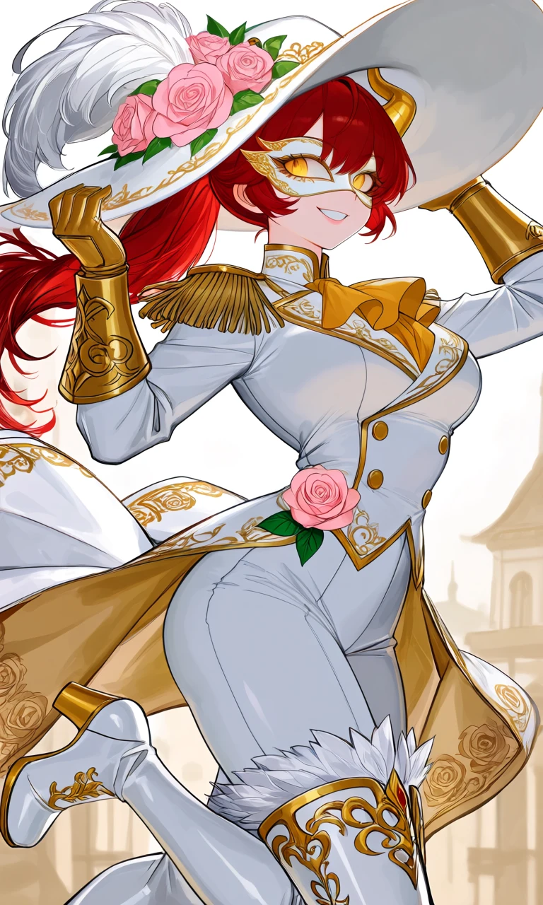
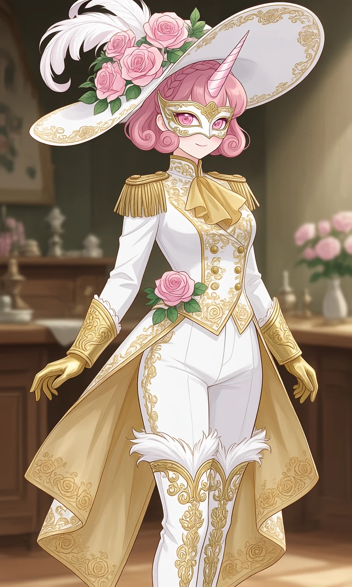

The Gilded Cavalier

Outfit Prompt
She is wearing a magical girl outfit.
A very large, dramatic wide-brimmed white hat with a slight upward curve. It’s heavily decorated with clusters of soft pink roses, green leaves, and a prominent white feather plume on the left side. Delicate gold filigree and scrollwork adorn the base of the hat. An elegant, feminine white masquerade mask with gold ornamental detailing around the eyes, covering the upper half of the face while leaving the mouth and chin visible.
Coat: A fitted, white military-style tailcoat with intricate gold embroidery and scroll patterns throughout. Prominent gold epaulets with thick fringe on both shoulders. High standing collar with gold trim. A large, soft gold cravat at the neck. Double-breasted, gold buttons running down the front. Long coat tails that flow dramatically behind, lined in a warm beige/gold fabric and edged with more gold patterns and rose motifs.
Arms: Long white sleeves with gold cuffs. Matching ornate gold gauntlets cover the forearms, featuring embossed designs. The hands wear fitted gold gloves.
Bottoms: Slim white trousers or breeches that tuck into the boots.
Boots: Tall, white heeled boots with elaborate gold filigree, scrollwork, and floral patterns. The top edges feature white feather-like or fur trim, and there’s a small gold emblem near the toe.
A single pink rose with green leaves is pinned at the waist on the character’s left side. The entire outfit is trimmed extensively in gold, giving it a regal, ceremonial appearance.
Outfit Examples



